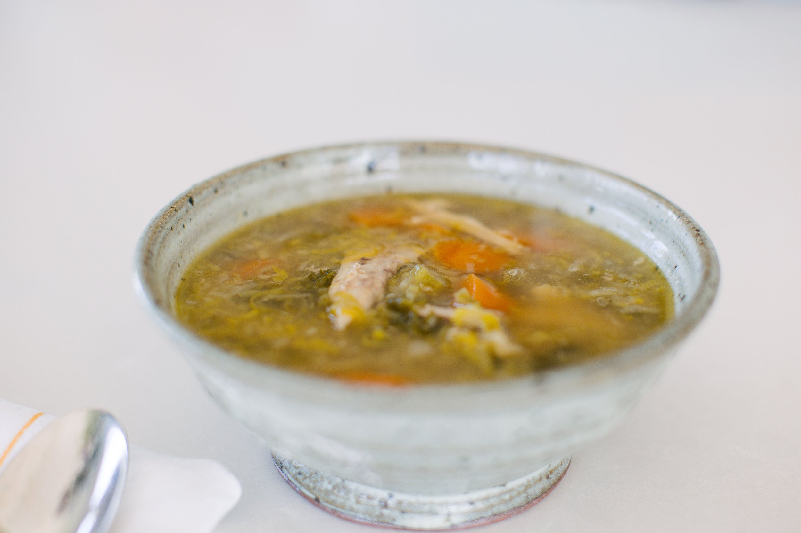

The first few days after surgery are when your body needs the most nutritional support. However, at the same time, this is also when your appetite may be at its lowest.
Anaesthetics, pain medication, and the physical and even mental stress of having to have surgery can all affect how you feel about food and eating. Some people also feel slightly nauseous — and this can persist for days — while others simply don’t feel particularly hungry at all. This is completely normal, and there’s no need to force yourself to eat large meals straight away.

Instead, focus on easy-to-eat, gentle, whole foods such as warm home-made broth, light soups or very liquidy stews and casseroles, soft scrambled eggs, plain full-fat yoghurt or kefir, smoothies, stewed fruit, and lightly cooked vegetables. These all provide valuable protein, minerals, and healthy fats, but don’t feel too heavy in your stomach while your digestion settles.
Protein in particular is vital post-surgery, and my recommendation is to consume some at every meal. If you find that daunting, try adding some powdered collagen to drinks or brothy soups — one scoop usually provides about the same amount of very bioavailable protein as a couple of eggs, half a can of tuna, or 50 g of cooked chicken. It’s worth remembering, however, that unlike animal proteins, collagen is an incomplete protein, being low in tryptophan and other amino acids, and is always best used as a supplement.
Eating small amounts of food more frequently can also be helpful during this stage. Even a few spoonfuls of soup or yoghurt several times throughout the day will help provide your body with the nutrients it needs to begin the healing process.
Don’t forget about hydration.
Alongside gentle, nourishing foods, fluids also play an important role in recovery. During the healing process your body is constantly moving nutrients, hormones, immune cells, and waste products through the bloodstream and lymphatic system. Staying well hydrated helps support these processes, ensuring that nutrients can reach the tissues that need them, and that inflammatory byproducts and other waste materials can be cleared efficiently.
When you’re dehydrated, lymph fluid can become thicker and more sluggish, which slows the movement of these substances through the body. Your kidneys also rely on adequate hydration to filter and flush waste products effectively after surgery. As a simple guide, if your urine is dark yellow rather than pale or almost clear, it’s usually a sign that you need to drink more fluids.
Plain, high-quality water is always a good choice, but it’s not the only way to stay hydrated. You may like to make your own electrolyte drink by mixing a pinch of sea salt, 1 teaspoon of raw honey, and the juice of half a lemon into a bottle of water. Shake well to dissolve the honey and sip throughout the day.
Many foods and other drinks also contribute to your fluid intake while providing valuable nutrients that support healing. Some great options include:
- Herbal teas, such as nettle or dandelion root, which traditionally support detoxification and lymphatic flow. Chamomile, lemon balm, and peppermint are also helpful for relaxation and gentle digestive support. If you can, take your favourite teabags and an inexpensive kettle into hospital with you so that you can enjoy a warming drink whenever you want.
- Coconut water, which naturally contains electrolytes such as potassium and magnesium. This can be a gentle way to stay hydrated when your appetite is low.
- Smoothies, or occasional fresh vegetable and fruit juices — preferably home-made rather than packaged.
- Fermented drinks, such as kombucha, water kefir, kvass (a fermented beetroot drink), or diluted milk kefir.
- Home-made soups and broths, which contain lots of minerals and collagen, and are often particularly comforting in the first few days after surgery.
You’ll also obtain a surprising amount of water from certain fresh foods. Fruits and vegetables such as cucumber, watermelon, strawberries, tomatoes, zucchini, citrus fruits, and leafy greens all contain high levels of bioavailable water, as well as vitamins, minerals, and antioxidants that support healing.
Support your gut microbiome.
Almost everyone notices that their digestion is a little sluggish when they’re in hospital, particularly if they’ve had an anaesthetic. But even stress and certain medications (particularly antibiotics) can cause gut problems including bloating and constipation. This is because they disrupt the delicate balance of the gut microbiome — the collective name for the trillions of bacteria that inhabit the colon — making it harder for us to absorb and process nutrients.
Collagen-rich broth, gentle warming spices such as cinnamon and nutmeg, and cultured and fermented foods such as yoghurt, kefir, or lacto-fermented vegetables will all help support your gut microbiome and gradually bring your digestion back into balance.
Previous: Preparing for surgery · Next: Recovering at home